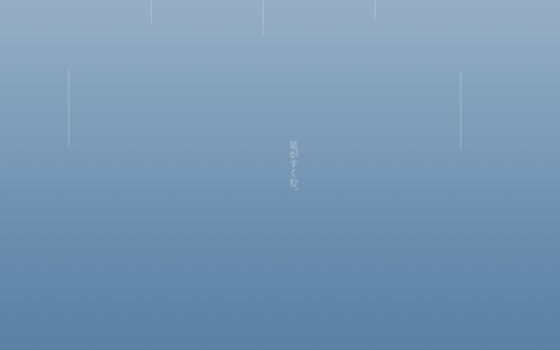
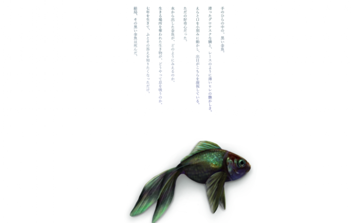
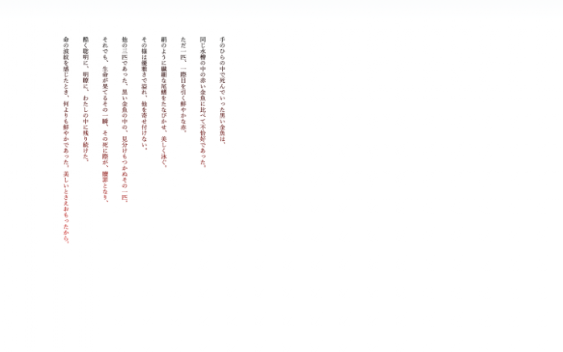
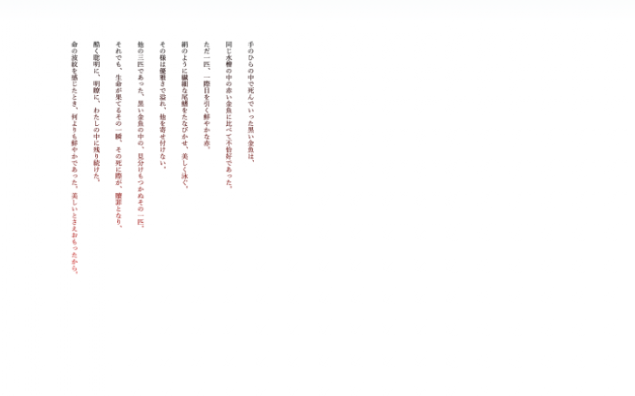

黒い金魚
web上で読む動く小説
Webとグラフィックと映像を組み合わせて、web上で読む動く小説です。
小説を敬遠している人に、読むきっかけを与えるような小説を作りたいと考えたのがきっかけで、
アンケートや現状調査をおこなったところ、「小さい文字が均一に並んでいるのが苦手」「文字ばかりだと想像しづらくて疲れる」
といった声が多く文字や背景を動かしてみるのはどうだろうか、と考えてみました。
デジタル社会になった今、小説の新しい形を生み出す背景のもと、
グラフィックと映像、CSS、Javascriptを使用した動的なweb小説「黒い金魚」の制作を行いました。
サイトはこちら→ 黒い金魚
学科サイトはこちら→ 紀野はるか/情報デザイン研究I
使用ソフト：HTML, CSS, Javascript, Atom, Illustrator, AfterEffects
制作期間：3年前期


 
